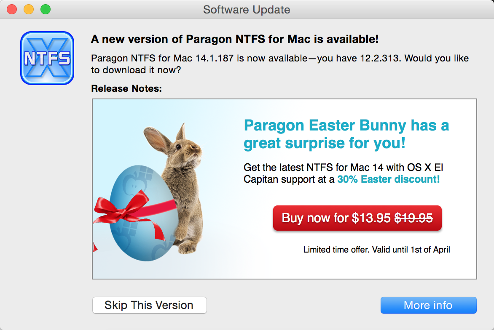
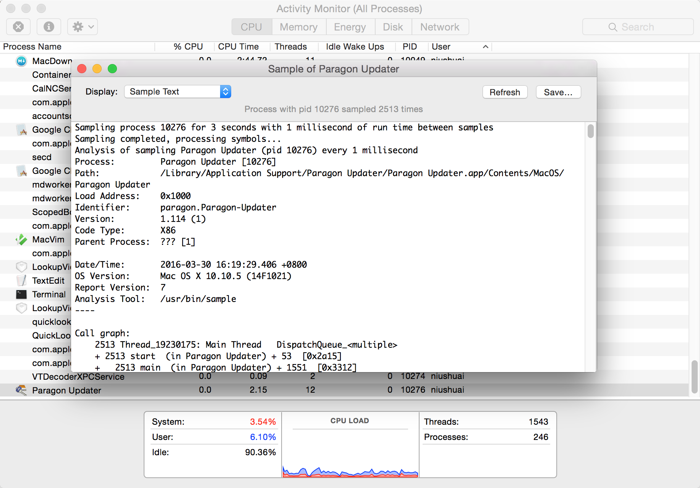

用Mac就是图个清静，所以广告不能忍。
##突然出现的广告
这两天我如往常一样，用着Mac写代码、上网。然后，突然在我的屏幕上弹出了一个Paragon NTFS的广告，当时我就纳闷了：以前有次是要用ntfs格式的移动硬盘，在网上找了找，都说Paragon NTFS比较好，我当时就装了一个，因为是要收费的，后来我就换了mounty，把它卸载了。怎么现在还会提示广告呢？

当时我是用的清理软件把Paragon NTFS给卸载了，是不是残留了一些文件？
##寻找程序位置
我打开[Activity Montitor]，然后找到了进程[Paragon Updater]，点齿轮图标后的向下箭头，选择[Sample Process]，然后弹出[Sample of Paragon Updater]，窗口中就显示了这个进程的相关信息：

其中最重要的一条信息：
Path: /Library/Application Support/Paragon Updater/Paragon Updater.app/Contents/MacOS/Paragon Updater
用Finder打开这个路径，就找到了Paragon Updater程序。正准备删除的时候，突然想到：它是怎么被启动的呢？我完全没有去操作它呀？肯定是开机启动项！
##登录启动
一般的程序，会创建一条登录启动项，在用户登录进系统后，启动对应的应用程序。查看登录启动项的方法：点击苹果LOGO->[System Preferences]->[Users & Groups]，然后右边的选项卡选择[Login Items]，就可以看到自己账户下的启动项了。不过并没有在这里看到Paragon Updater。
除了登录启动项，还有开机自启动项。
##开机自启动
Mac系统有一个命令行工具launchctl，一些程序会把自己的配置文件放在特定的目录里，然后通过这个工具创建自启动服务，配置文件放在以下三个位置：
/Library/LaunchDaemons/
/Library/LaunchAgents/
~/Library/LaunchAgents/
最后，我在/Library/LaunchDaemons/和/Library/LaunchAgents/里都找到了Paragon相关的启动项配置文件，/Library/LaunchAgents/com.paragon.updater.plist这个文件就是启动Paragon Updater的配置文件。
##动手清理
看了这么多，最后可以动手清理了，自启动配置文件不要直接删除，而是先用launchctl将它从自启动里取消，然后再删除。
sudo launchctl unload /Library/LaunchAgents/com.paragon.updater.plist
sudo launchctl unload /Library/LaunchDaemons/com.paragon.ntfs12.refresh.plist
sudo rm -f /Library/LaunchAgents/com.paragon.updater.plist
sudo rm -f /Library/LaunchDaemons/com.paragon.ntfs12.refresh.plist
再去删除/Library/Application Support下的Paragon Software和Paragon Updater即可。
该方法应该能适用于其它程序的类似情况。
世界又恢复了以往的平静。